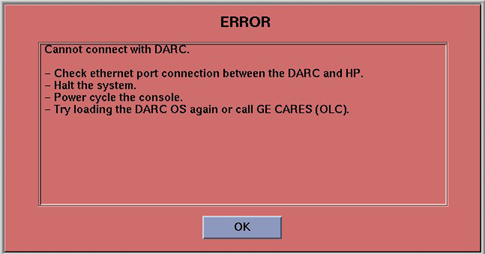
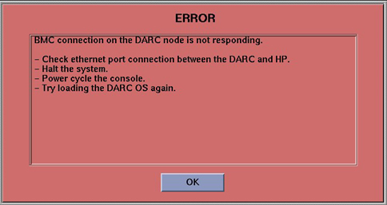
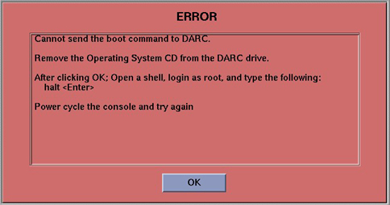
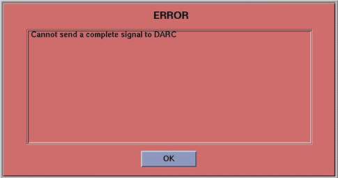
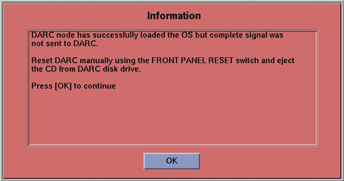

Operating Documentation
Direction 5134894-800, Rev# 9
GOC4 Upgrade Installation & Service Information
Operating Documentation |
| Last Revised on: | 16 October 2006 |
This section describes pop-up message boxes that may appear during a DARC OS load and provides additional information on what to do if you get one.
| NOTE: | The term “DARC” will be used in this module to refer to DARC or VDARC Nodes. |
Locate the appropriate pop-up box in the following subsections and refer to the actions to take.
Illustration 1: Cannot Connect With DARC

SOL (Serial Over LAN) checks out good but a failure occurs.
At the rear of the DARC, verify the DARC Ethernet cable connecting to Host Ethernet Port C is installed properly (i.e., “Clicked-In” fully at both ends).
Click [OK] .
Open a Unix Shell.
Type: halt [ENTER] .
When console message states power down then Power Off the Operator Console.
Wait 30 seconds and Power On the Operator Console.
Try the DARC OS load again.
Illustration 2: BMC Connection on DARC Node is Not Responding

Cannot connect to the DARC or an internal error in the DARC.
At the rear of the DARC, verify the DARC Ethernet cable connecting to Host Ethernet Port C is installed properly (i.e., “Clicked-In” fully at both ends).
Click [OK] .
Open a Unix Shell.
Type: halt [ENTER] .
When console message states power down, then Power Off the Operator Console.
Wait 30 seconds and Power On the Operator Console.
Try the DARC Node OS load again.
Try new DARC Node to Host Ethernet cable.
Call OLC before replacing DARC.
During initial DARC Operating System load process something goes wrong.
Illustration 3: Cannot Send Boot Command to DARC

During initial DARC Operating System load process something goes wrong.
Remove OS CD from DARC drive.
Click [OK] .
Open a Unix Shell.
Type: halt<ENTER>.
When console message states power down then Power Off the Operator Console.
Wait 30 seconds and Power On the Operator Console.
Try the DARC Node OS load again.
Illustration 4: Cannot send complete signal to DARC

This is a Pop-Up that is used in conjunction with the informational pop-ups listed in Section 2.5. It notifies the user an ERROR has occurred.
Click on [OK] .
Refer to the following section.
Illustration 5: DARC Node OS Loaded But No Complete Signal Sent (Tips Ref)

Both messages are essentially the same. Ignore the “tips and work around manual” reference. The DARC Operating System was properly loaded properly, however, the DARC “complete” signal was lost or missed within the time-out period.
At the DARC front panel, press the RESET switch.
Eject and remove the OS CD.
The Pop-Up box in the LFC procedure may pop-up. Click on [OK] .
Verify the OS was successfully loaded per the LFC procedure:
Open a Unix Shell.
{ctuser@hostname}su -<Enter>
Password:#bigguy<Enter>
[root@hostname]#rsh darc<Enter>
Last login: Thu Oct 9 11:17:35 on ttyS1 You have new mail.
[root@localhost root]exit<Enter> <- The prompt shows the OS was loaded properly.
Close the Unix Shell.
Click on [OK] .
Continue with software install. Load DARC Application Software on the Host Computer next.
Verify the rear power cable is connected, switch is turned on and fan is operating.
Verify front power LED is illuminated.
Verify Ethernet cable is in good condition and connected as follows:
Host Ethernet port C to DARC Node Ethernet.
HP (right-card - top Ethernet port).
This subsection will verify the DARC Node remote shell can be invoked to determine if the DARC Node is up. The prompt root@localhost lets the user know the DARC OS has been loaded successfully.
Open a Unix Shell and type the following:
{ctuser@hostname}su space -<Enter>.
Password:#bigguy<Enter>.
[root@hostname]#rsh darc<Enter>.
Last login: Thu Oct 9 11:17:35 on #### You have new mail..
[root@localhost root ]#exit<Enter>.
logout rlogin: connection closed.
[root@hostname]#.
Verification of the Serial Over LAN check is almost always the initial test performed on the DARC after power and cable verification. It has been placed after ping and remote shell checkout because they are very quick tests. With SOL Checkout the telnet connection is made and the SOL connection from the Host Computer to the DARC Node is then established. This test will verify the DARC Node was booted and is up.
Open a Unix Shell and type the following:
{ctuser@hostname}su space -<Enter>
Password:#bigguy<Enter>
[root@hostname]# telnet localhost 623<Enter>
Trying 127.0.0.1...
Connected to localhost. <- This output indicates Host Apps were loaded and the cliservice proxy server is running.
Escape character is '^]'.
Server:darc<Enter>
Username:<Enter>
Password:<Enter>
Login successful <- This output indicates the SOL connection is established.
dpccli>console<Enter>
| NOTE: | If the darc login prompt is not present and localhost.localdomain prompt is displayed, then try reloading the DARC Node OS and DARC Application software per the procedure. The problem could be that the DARC Apps did not load correctly. Always be sure the DARC OS version matches the Host OS version already loaded. |
Table 1: DARC OS Network Load Status/Error Messages
| Condition | Message |
| Starting the OS Load | Verify that the DARC Node front panel POWER LED is lit. If no power, then turn the power ON, using the POWER switch on the DARCs front panel. Wait for 1 minute to boot-up, and continue with the next step. Please insert the OS DVD in the DVD drive on the HOST. Click [OK] to start OS load. |
| Failure to insert OS DVD on the Host | Please insert the OS DVD in the DVD drive on the HOST. Click [OK] to continue. |
| Wrong OS DVD inserted on the Host | The OS DVD in the DVD drive on the HOST is the wrong version. Insert the correct version of the OS DVD in the DVD drive on the HOST. Click [OK] to continue. |
| Could not send reset signal to reboot the DARC | BMC connection on the DARC node is not responding. Check ethernet port connection between the DARC and HP. Halt the system. Power cycle the console. Try loading the DARC OS again. |
| Could not send "Complete" signal to the DARC to reboot it after the OS load has completed | DARC node has successfully loaded the OS but complete signal was not sent to DARC. Reset DARC manually using the FRONT PANEL RESET switch. Press [OK] to continue. |
| DARC OS load has completed successfully. | DARC Operating System load is complete. Please remove the OS DVD from the DVD drive on the HOST. Press [OK] to continue. |